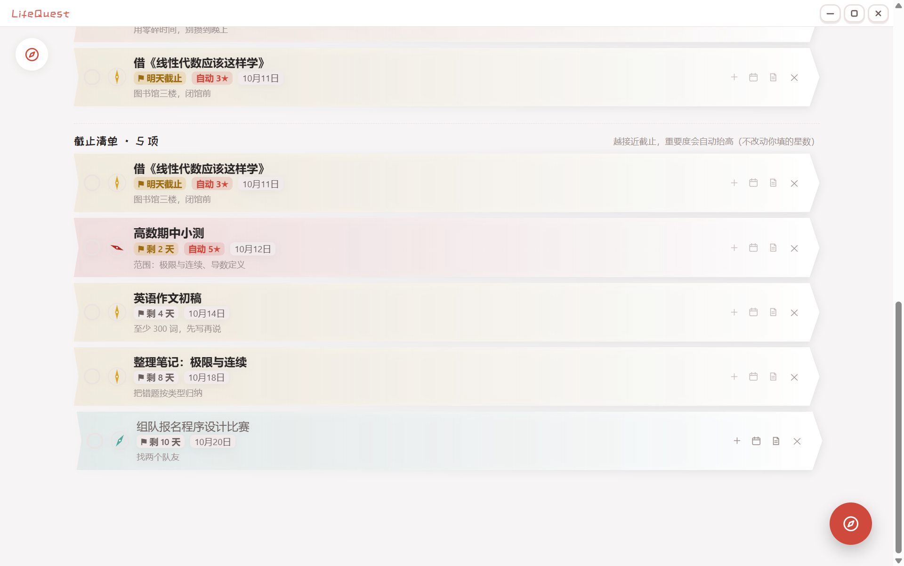
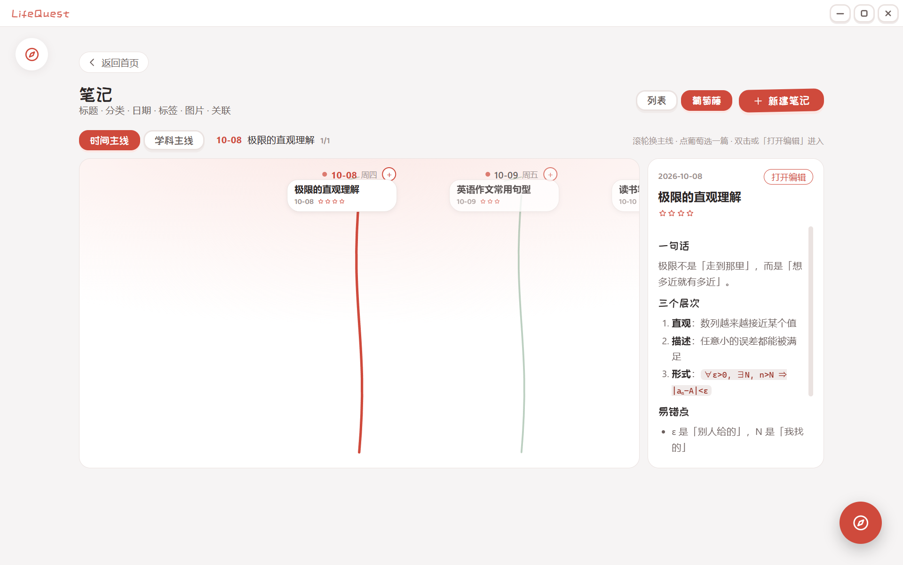
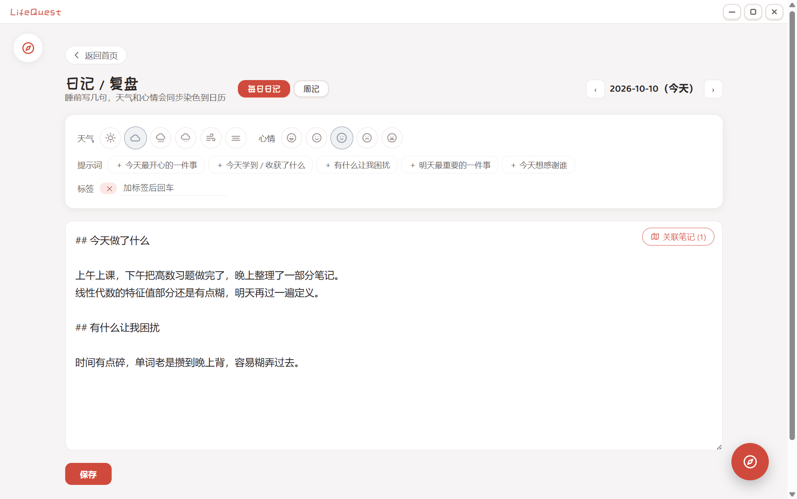
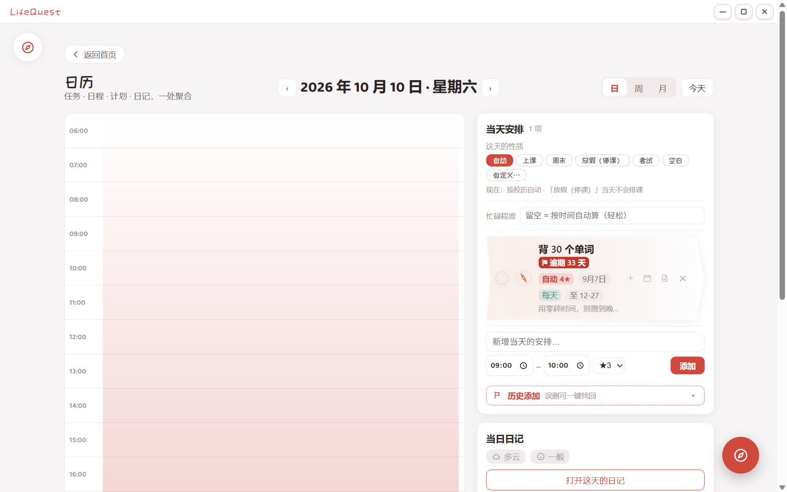
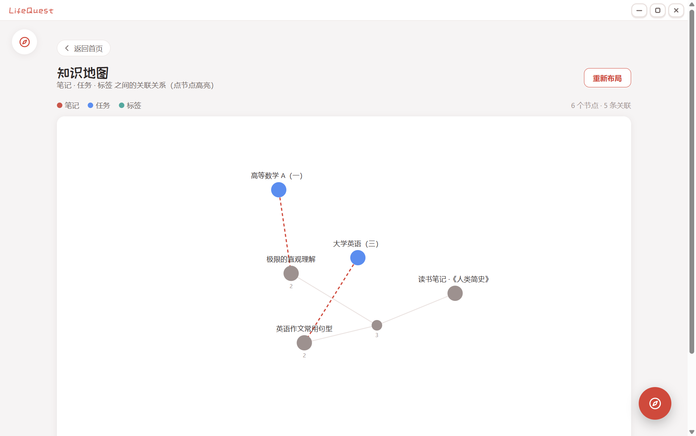

不是另一个打卡 App，而是一个想陪你认真生活的工具。
一列一天，滚轮左右连贯滑动，不再一页一周。进页面自动把今天放中间，鼠标悬停处下边缘会平缓下沉。
只填一个截止时间的任务，从今天起每天出现在「截止清单」里，越接近截止，显示的重要度自动抬高。

正文按段落分块，点一块就地变成输入框，不用在「编辑 / 预览」之间切。支持任务清单、代码块、图片、附件。

每天记的天气和心情，会变成日历上这一天的颜色。每日日记和周记在同一页，一条藤串起所有日子。

一天的时间轴，日程按时间块排。截止事项是一条横线加一小块渐变，越接近截止颜色越深。

把笔记、任务、标签之间的关联画成一张网，关联越多的节点自动聚得越近。

你的数据，是你自己的
没有云服务、没有账号体系、没有「服务关停就全没了」的焦虑。所有数据都是你能直接打开、复制、备份、带走的普通文件。
到 GitHub Releases 选你对应系统的文件。全部免费。
因为没买代码签名证书（个人项目，正常）。Windows 选「更多信息 → 仍要运行」；macOS 右键 App → 打开；若提示已损坏执行 xattr -cr /Applications/LifeQuest.app。
Windows 在 exe 同级 LifeQuest-Data/；macOS 在「文稿/LifeQuest-Data」；Linux 在 AppImage 同级。想换位置设环境变量 LIFEQUEST_DATA_ROOT。
不会。默认完全离线。只有「AI 识图」会用你填的 API Key 把你贴的图片发给你指定的模型服务，默认关闭。
短期内不会 —— 这个应用的前提是「数据是自己电脑里的普通文件」，做成云服务就违背了初衷。